Menu▼
Menu▼
Menu▼
Menu▼
Resonant with World is an academic project I completed with a teammate. It is a web database application designed to help a small photography business with handling photoshoot projects and selling merchandise.
UX/UI Design & Branding, Backend Development, Databases
Focus: Academic Project
Date: September 2021
Program: Figma
Languages: PHP, CSS, HTML
Resonant with World is a business owned by Anna Sola, who is an experienced photographer, that focuses on tailoring photoshoot projects and selling merchandise for customers. Bookings from their customers are currently noted down through the use of pen and paper and the use of spreadsheets in database management is only applied with low-level practice. Resonant with World also uses their social media platforms to accept any bookings. However, this is unsustainable in the long term if Anna wants to grow her business further. It would be more beneficial to have her own platform in order to appear more professional in the marketplace.
A website that automates and digitalises the business processes may be the solution for Anna and her company, as it will increase the efficiency and effectiveness of the business. This system will help administer her customers from Resonant with World, arrange photoshoot projects using the website and system, sell merchandise and ultimately expand her business. All the necessary data and information will be stored within a database which will help users track their actions relating to the business.
We conducted research by interviewing Anna Sola, and asking her questions to capture a better idea of what she wanted on the application.
In summary, she wanted:
● To digitialise her platform
● Sell merchandise
● Appeal to more customers
Login and Registration System
● The system is used by many different users and there needs to be a different user
experience for each user group: administrators and customers.
● Administrators of Resonant with World will be able to manage and edit the website
whenever they want, track user behaviour, see an overview of KPI’s on their
dashboard, hence why their dashboard will be different from other users as more
permission and authentication will be granted.
● Customers will be able to view their order details and purchase history which allows
them to keep track of what they have purchased/booked from Resonant with World.
Customers' profile section will also be granted to edit their profile details when
required if anything needs to be altered and changed.
● Data about the user will be stored and collected during the registration process.
● Making an account will not be mandatory. Guests will still be able to purchase
products but are encouraged to register if they are recurring customers.
Web Presence
● Transitioning Resonant with Worlds’ company onto a website will have many
beneficial factors such as exposure to more potential customers, simple and easy
management of their business and overall Resonant with World becoming more of a
professional service and keeping up with the newest technology to advance in the
photography industry.
● A section for ‘Contact Us’ for any general concerns or inquiries from customers, and
also an ‘About Us’ section to explain the background of Resonant with World and
also introduce Anna, detailing her motivations and years of experience within the
industry.
Booking System
● Provide a booking system which will give customers the freedom to conveniently
reserve a date and time, and be able to choose when and where they can arrange
their photoshoot.
● The booking system will make it more convenient as customers will no longer need to
manually message Anna on her social media platforms and wait for a response. The
booking system will provide availability and specific quote for their photoshoot and
customers will have the ability to provide any special considerations necessary for
their shoot.
● The format of the booking system will be in a calendar format which will allow users
to have a visualisation of the specific date and time available for booking.
Payment System
● Provide a booking system which will give customers the freedom to conveniently
reserve a date and time, and be able to choose when and where they can arrange
their photoshoot.
● The booking system will make it more convenient as customers will no longer need to
manually message Anna on her social media platforms and wait for a response. The
booking system will provide availability and specific quote for their photoshoot and
customers will have the ability to provide any special considerations necessary for
their shoot.
● The format of the booking system will be in a calendar format which will allow users
to have a visualisation of the specific date and time available for booking.
Advertisement/News
● Provide a booking system which will give customers the freedom to conveniently
reserve a date and time, and be able to choose when and where they can arrange
their photoshoot.
● The booking system will make it more convenient as customers will no longer need to
manually message Anna on her social media platforms and wait for a response. The
booking system will provide availability and specific quote for their photoshoot and
customers will have the ability to provide any special considerations necessary for
their shoot.
● The format of the booking system will be in a calendar format which will allow users
to have a visualisation of the specific date and time available for booking.
E-Commerce/Online Shopping
● Provide a booking system which will give customers the freedom to conveniently
reserve a date and time, and be able to choose when and where they can arrange
their photoshoot.
● The booking system will make it more convenient as customers will no longer need to
manually message Anna on her social media platforms and wait for a response. The
booking system will provide availability and specific quote for their photoshoot and
customers will have the ability to provide any special considerations necessary for
their shoot.
● The format of the booking system will be in a calendar format which will allow users
to have a visualisation of the specific date and time available for booking.

 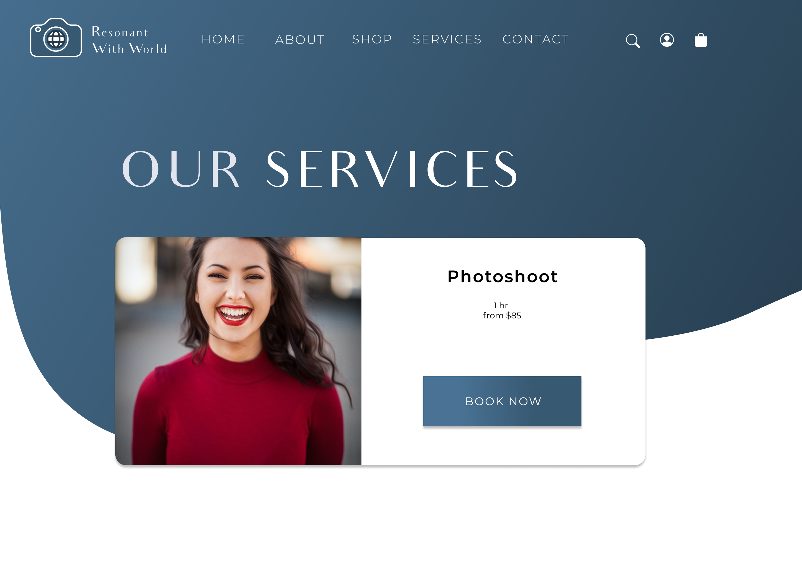
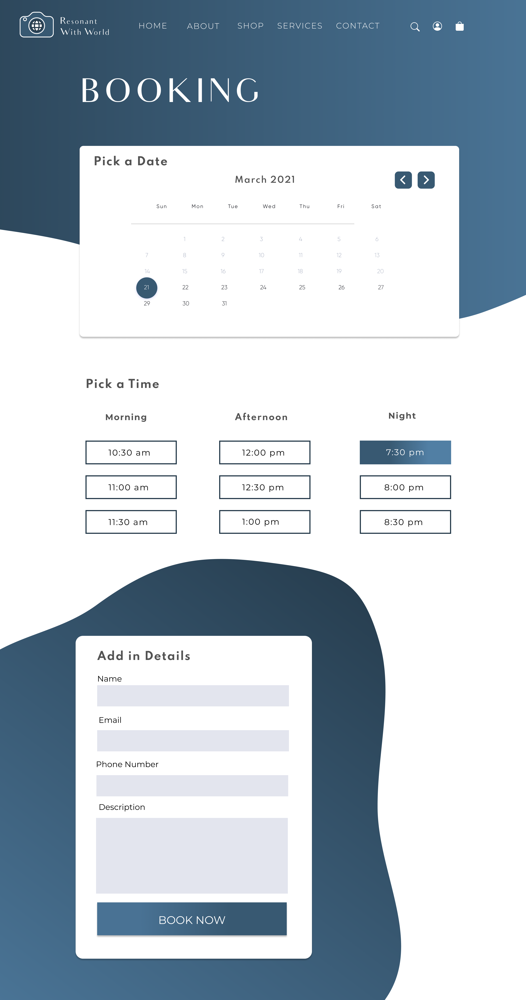
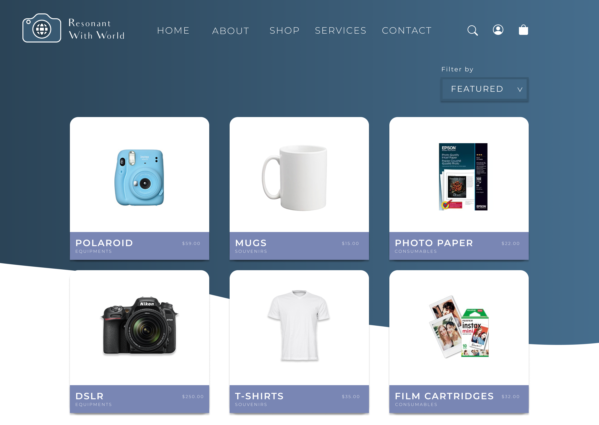
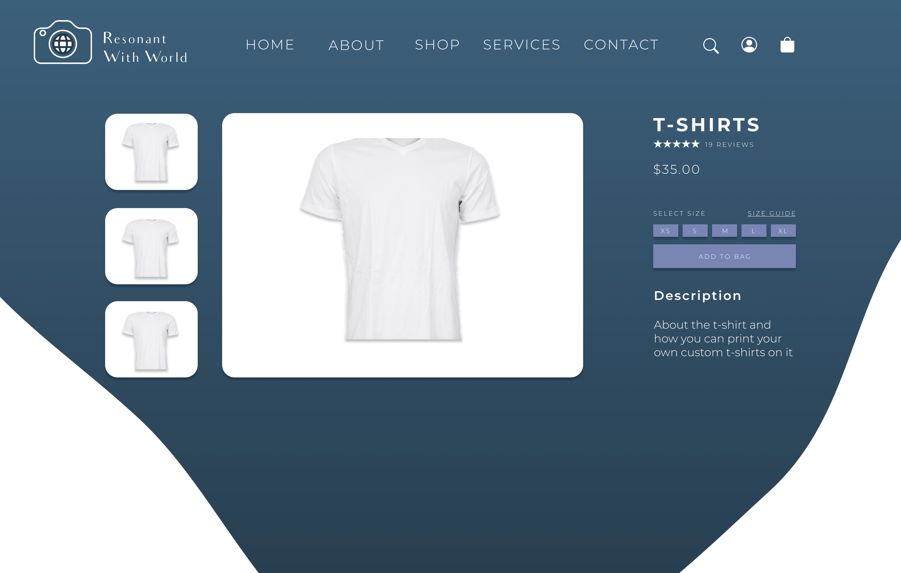
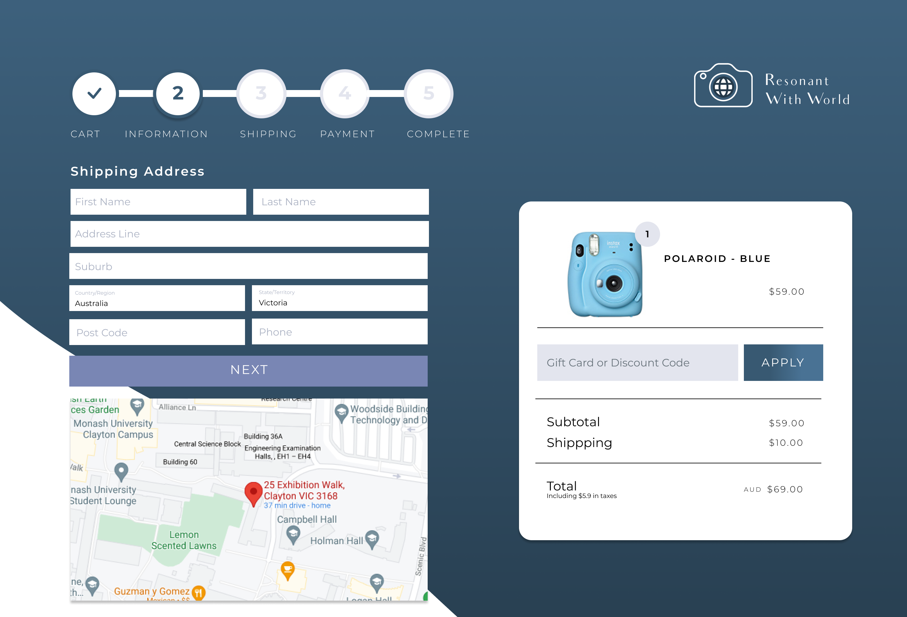
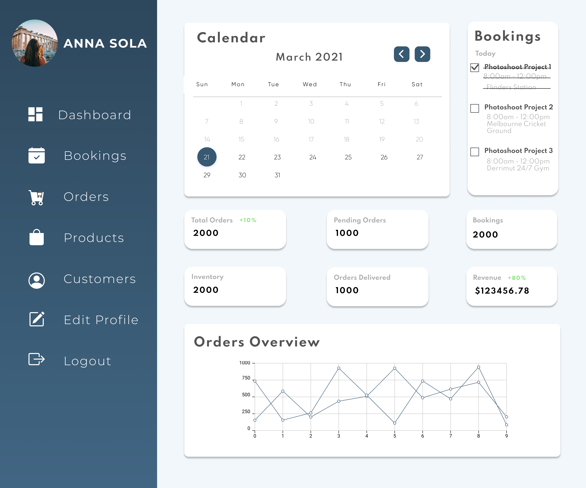
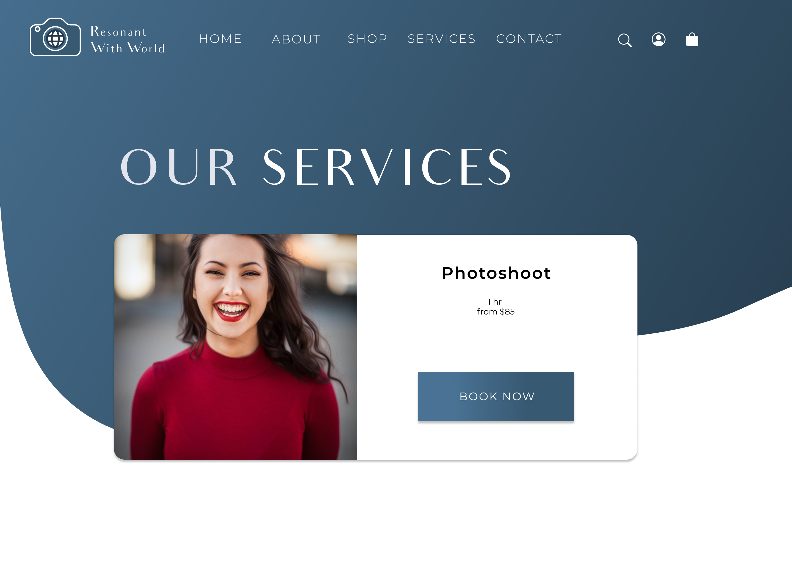
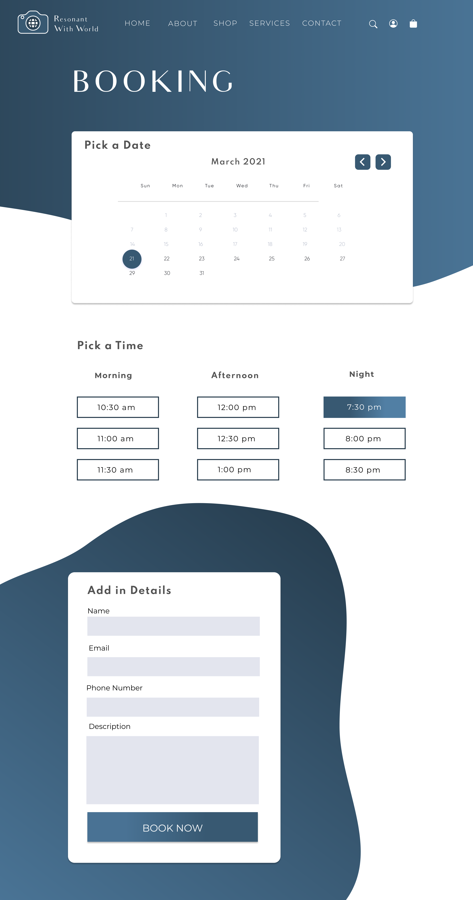
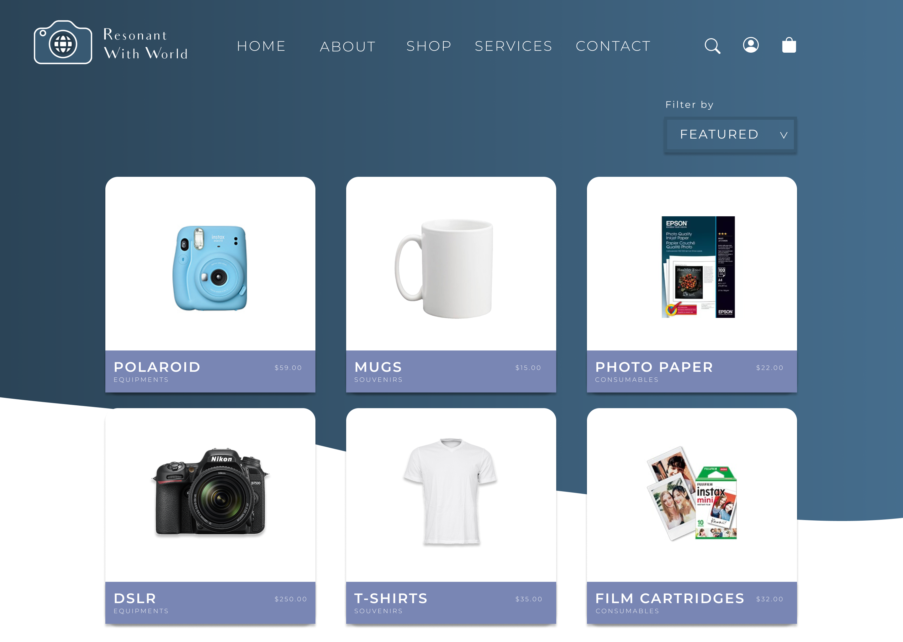
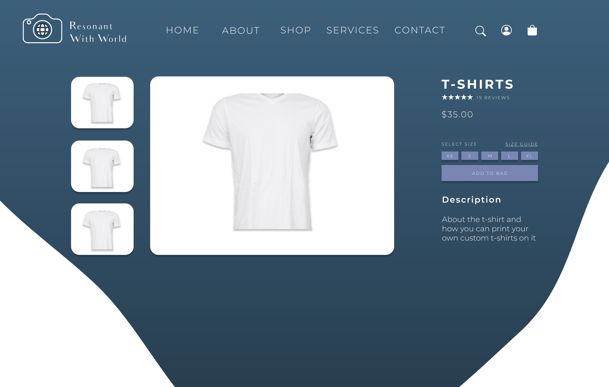
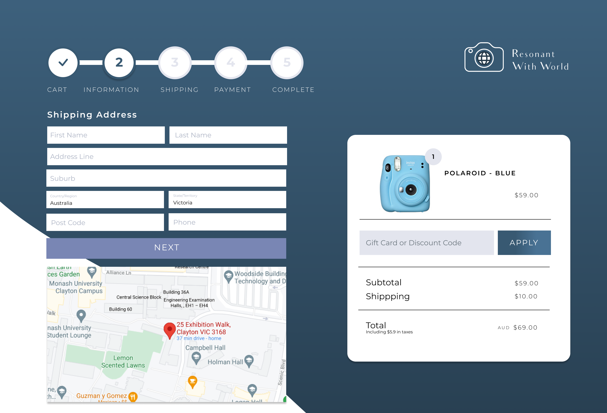
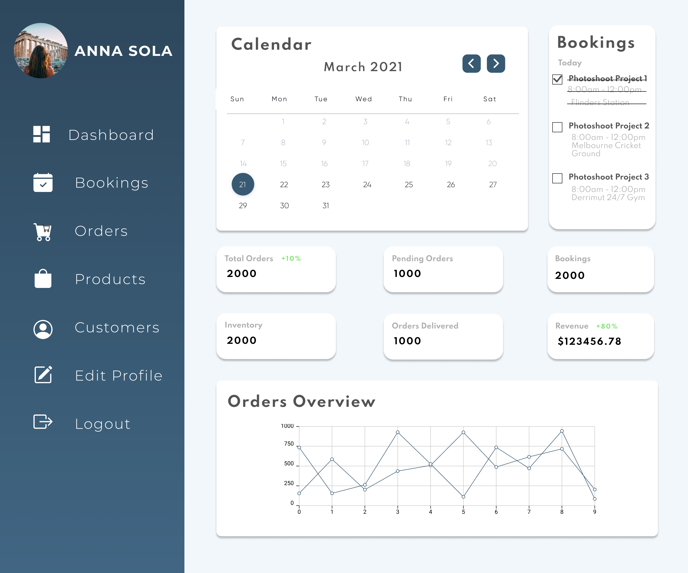
With this experience, I learned a lot about using databases, mySQL and PHP. I coded a lot of the backend and it was very fun to learn! While I do prefer doing more frontend development and designing, it was a good experience learning and I would like to do more big projects such as this.